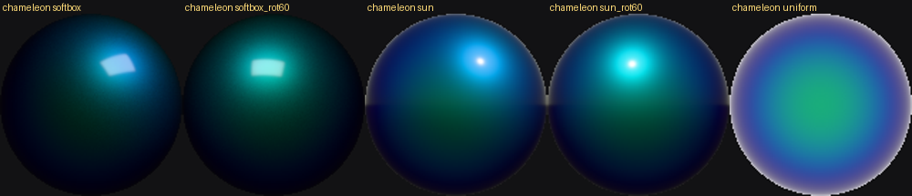
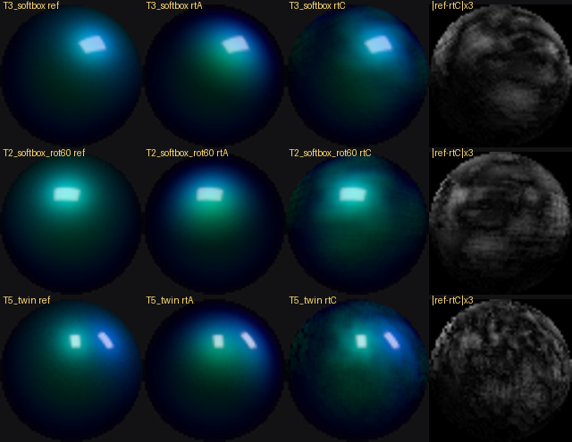
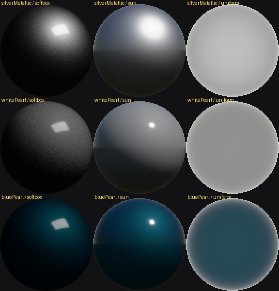

AUTODREAM GARAGE
Sales tools — internal test previews. Not for customers. Colours: AIKKA catalogue, used for internal evaluation.
Paint Studio (test build)
Open Paint Studio — 3D AIKKA colour preview. Needs a desktop browser with WebGL; first load is about 21 MB.
Open a specific state directly:
- SPC80-01 chameleon, sun, side
- SRP70-00 Psychedelic Black, studio
- 1091G Metallic Silver, studio, side
New physics paint model (test): SPC80-01 in v3 · old vs new side by side · Metallic Silver in sun, v3 · SPC80-01 chip shape, Workshop light (new) · SPC80-01 car, Workshop light (new). In the app: M = switch old/new model, Q = quality (64/128/256/512 samples), F = frame rate.
URL parameters: model (v3), abmodels (1 = old left, new right), quality (preview, balanced, high, reference), paint (e.g. ak-spc8001), light (studio, showroom, booth, sun, overcast, dusk), view (front34, side, rear34, top, panel). Default is the old model; add model=v3 for the new physically based model (rainbow / Super Star finishes still old). No sun shadows on v3 paint yet.
Physics lab — new paint model (work in progress)
Reference renderer: clear coat, flakes inside the coat (thin-film / multilayer optics), and base coat. A fast real-time version is being validated against it before going into the app.

Chameleon reference: the colour follows the light (rot60 = light turned 60°).

Rows: softbox, rotated softbox, two lights. Columns: reference, split-sum (rejected), filtered importance sampling (candidate), error ×3.
